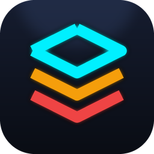

Disk Atlas
Visualize your storage as an interactive 3D city. Find what ate your disk — in seconds.
Latest release: loading…
Windows
Signed Inno Setup installer. Windows 10 or later, 64-bit.
macOS
Notarized DMG — drag Disk Atlas into Applications. macOS 10.13+.
Linux
Self-contained tarball — extract anywhere and run DiskAtlas.
3D Storage City
Folders become city blocks, files become towers — the biggest space hogs are instantly visible.
Private by design
Everything runs on your machine. No accounts, no telemetry, nothing leaves the disk you scan.
Fast & exclusion-aware
node_modules, .git and system folders are skipped automatically; multi-GB drives scan in seconds.